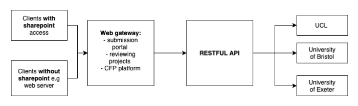
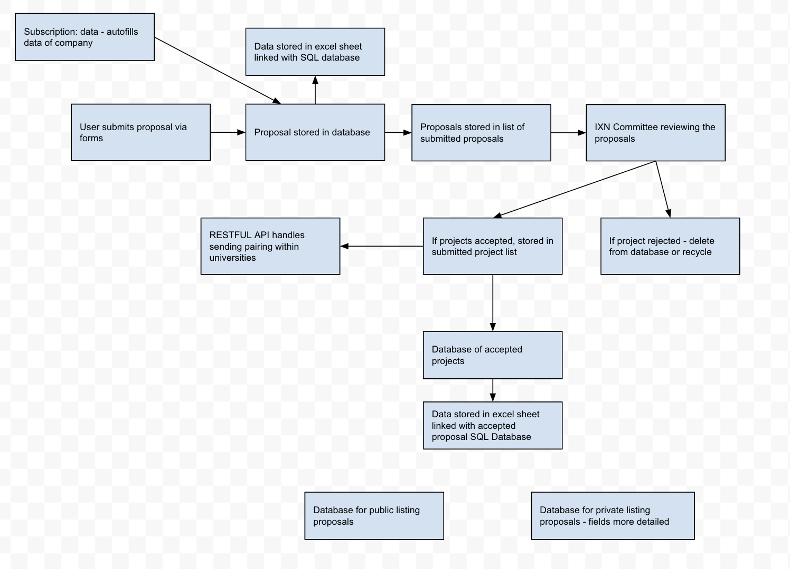
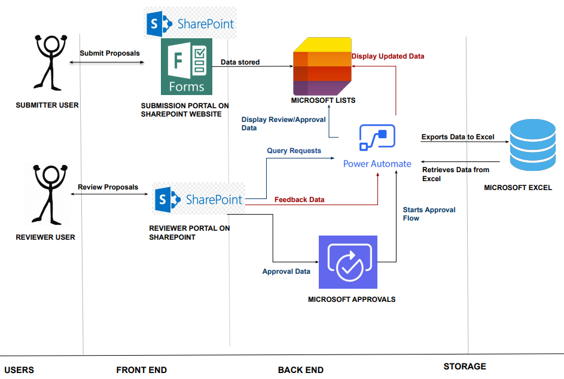
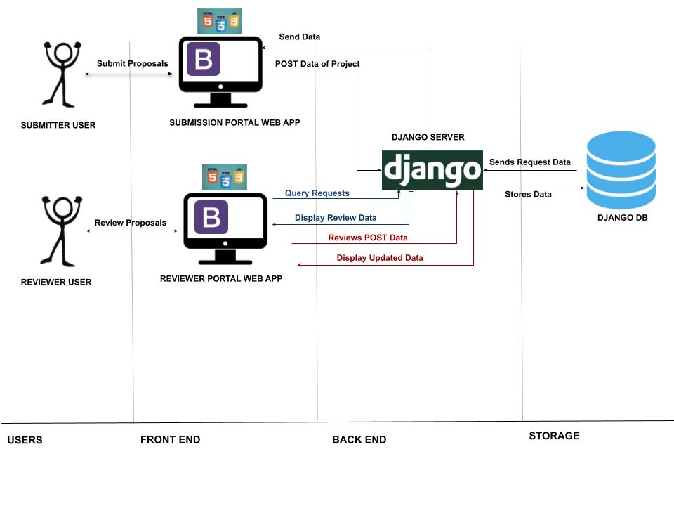

System Design
Although we had a good understanding of the main functionality of the system, it was important to consider how the system interacted with each other and the overall design. We created a basic outline of the structure of the system’s implementation.
After discussing with the clients it was highlighted that it would be important to deploy this within a company’s own intranet due to various confidentially and legal issues; it would not have been appropriate to launch this in a public platform with a login system. As Office 365 is a heavily used system in a large majority of businesses and universities, three of our clients were comfortable with the use of Microsoft Office’s SharePoint feature to implement the platform as it allowed fluid data collection and handling as well as allowing the system to be implemented within a company’s own intranet. However, it was challenging to implement a SharePoint solution to the system for the NHS, as smaller hospitals and trusts may not have the technology to keep up to date with Microsoft’s system. In addition to this, after speaking to our client, it was clear that amongst other issues, it would be difficult to gain acccess to certain files of different confidentiality levels, considering they were representing real patients, adding an additional layer of bureaucracy. Therefore, a possible solution was to implement a website using Django and Flask for the clients who do not have SharePoint ensuring inclusivity across all possible users. This will be connected to a web gateway so data will remain confidential within companies. Once submitted proposals have been accepted by company leads and managers, it will be exported to a restful API where it will export a restful feed where the public can access this information. This is involved in the stage electing universities to projects after they have been accepted. The restful API will allow universities to publicly subscribe to listings of projects and to see what is available. This data will be fed to the university intranets, for example their respective Sharepoint websites. A diagram is presented in Figure 1 highlighted the movement of data between the different components to show a basic overview of the architectural design of the overall system. Data Flow
User Flow

Sharepoint Architecture
The diagram below represents the overall system architecture of the sharepoint website, which illustrates the use of power automate for data flows and processes such as reviewers leaving feedback as well as the storage of data and the use of Microsoft Approvals for the approval stage of the IXN CFP portal. 
Django Architecture
The diagram below shows the overall django structure with the django server and the inbuilt SQL lite database, as well as bootstrap, javascript and CSS for the front end technology. 